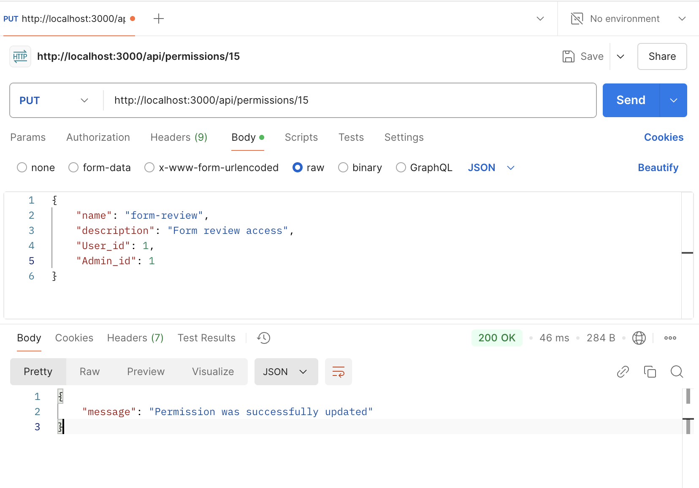
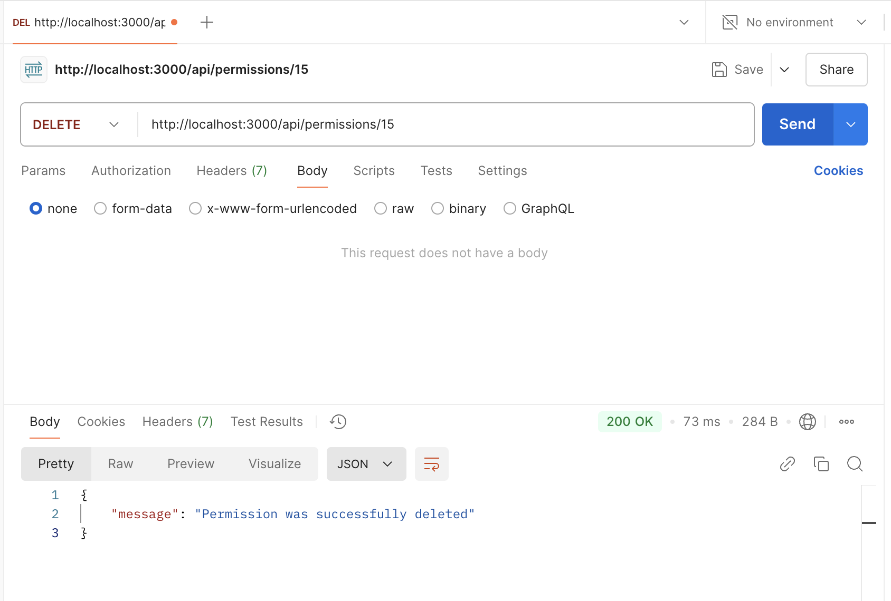

Тестування працездатності системи
Розробка CRUD-сервісу для управління нашою базою даних - а саме блоком доступів (Permissions)
Вихідні коди програми
- server.js
const express = require("express");
const dotenv = require("dotenv");
const permissionRoutes = require("./routes/permissionRoutes");
dotenv.config();
const app = express();
app.use(express.json());
app.use("/api/permissions", permissionRoutes);
const PORT = 3000;
app.listen(PORT, () => {
console.log(`Server is running on http://localhost:${PORT}`);
});
- config/db.js
require("dotenv").config();
const mysql = require("mysql2");
const connection = mysql.createConnection({
host: process.env.DB_HOST,
user: process.env.DB_USER,
password: process.env.DB_PASSWORD,
database: process.env.DB_NAME,
});
connection.connect((err) => {
if (err) {
console.error("Error while connecting to the database: ", err);
return;
}
console.log("Successfully connected");
});
module.exports = connection;
- controllers/permissionController.js
const db = require("../config/db");
exports.createPermission = (req, res) => {
const { name, description, user_id, admin_id } = req.body;
const query =
"INSERT INTO Permission (name, description, User_id, Admin_id) VALUES (?, ?, ?, ?)";
db.query(query, [name, description, user_id, admin_id], (err, result) => {
if (err) {
res
.status(500)
.json({ error: "Error while creating Permission", details: err });
} else {
res.status(201).json({
message: "Permission was successfully created",
permissionId: result.insertId,
});
}
});
};
exports.getPermissions = (req, res) => {
const query = "SELECT * FROM Permission";
db.query(query, (err, results) => {
if (err) {
res
.status(500)
.json({ error: "Error while getting Permission", details: err });
} else {
res.status(200).json(results);
}
});
};
exports.getPermissionById = (req, res) => {
const { id } = req.params;
const query = "SELECT * FROM Permission WHERE id = ?";
db.query(query, [id], (err, result) => {
if (err) {
res
.status(500)
.json({ error: "Error while getting Permission by id", details: err });
} else if (result.length === 0) {
res.status(404).json({ message: "Permission was not found" });
} else {
res.status(200).json(result[0]);
}
});
};
exports.updatePermission = (req, res) => {
const { id } = req.params;
const { name, description, user_id, admin_id } = req.body;
const query =
"UPDATE Permission SET name = ?, description = ?, User_id = ?, Admin_id = ? WHERE id = ?";
db.query(query, [name, description, user_id, admin_id, id], (err, result) => {
if (err) {
res
.status(500)
.json({ error: "Error while updating Permission", details: err });
} else if (result.affectedRows === 0) {
res.status(404).json({ message: "Permission was not found" });
} else {
res.status(200).json({ message: "Permission was successfully updated" });
}
});
};
exports.deletePermission = (req, res) => {
const { id } = req.params;
const query = "DELETE FROM Permission WHERE id = ?";
db.query(query, [id], (err, result) => {
if (err) {
res
.status(500)
.json({ error: "Error while deleting Permission", details: err });
} else if (result.affectedRows === 0) {
res.status(404).json({ message: "Permission was not found" });
} else {
res.status(200).json({ message: "Permission was successfully deleted" });
}
});
};
- routes/permissionRoutes.js
const express = require("express");
const router = express.Router();
const {
createPermission,
getPermissions,
getPermissionById,
updatePermission,
deletePermission,
} = require("../controllers/permissionController");
//creating permission
router.post("/", createPermission);
//getting all permissions
router.get("/", getPermissions);
//getting certain permission
router.get("/:id", getPermissionById);
//changing certain permission
router.put("/:id", updatePermission);
//deleting certain permission
router.delete("/:id", deletePermission);
module.exports = router;
Скріншоти тестування запитів у Postman
- POST
- GET ALL

- GET BY ID
- PUT

- DELETE
